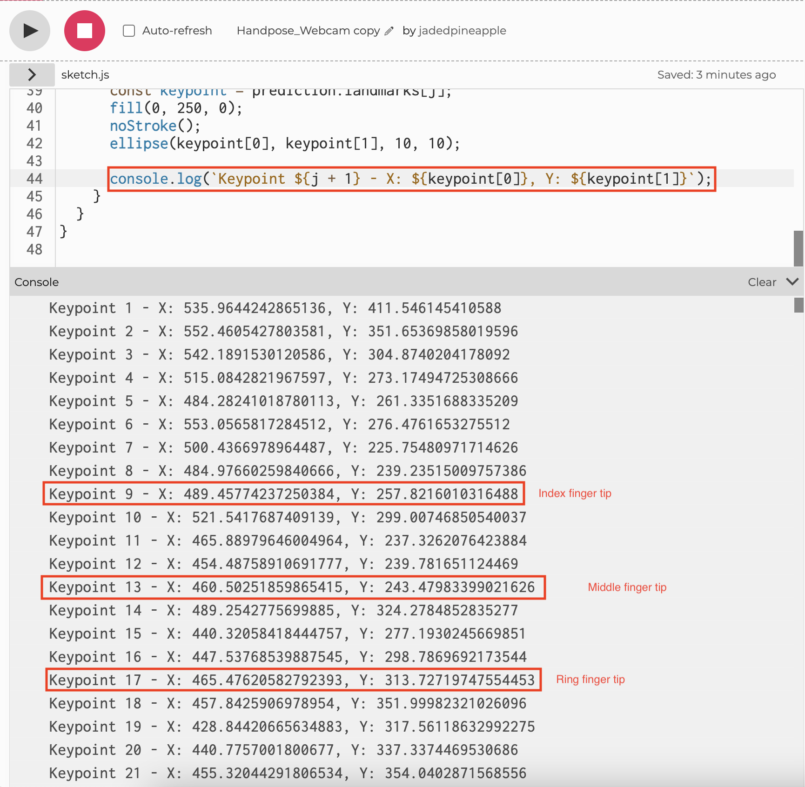

For this interface, I'm thinking about making a dice throwing device that's realized by Hand Pose in ml5js.
First, we need to flip the video also try to match drawn points to the image.

Second, we need to figure out if we can recognize gestures. After brief research, this is often achieved by TensorFlow. The premeter of this assignment is p5.js and ml5.js. However, this should be maneuvered by training the machine to know specific hand gestures based on the position of the points. As we can see, there's always 21 points registered for one hand.
After this, to moniter what points we need exact locations in order to maneuver, we changed keypoints color in our code, and eventually we found out the keypoint data for the three fingers that we want to monitor: index fingertip (keypoint 9), middle fingertip (keypoint 13) and ring fingertip (keypoint 17)
Additionally, we want to add another hand also as the point tracker. After some research, I'm looking into MediaPipe on how it is done with both hands.
Steps & Challenges
- 1. We need to have both hands tracked and shown on the video
- 2. On top of that, we need to train the machine to recognize certain hand poses of number, six in total.
- 3. We need to somehow train the machine to draw co-related images that's related to specific hand pose. How cand we do this? Is it doable?
- 4. If we can achieve that, could it also work with both hands to draw a dice combo?